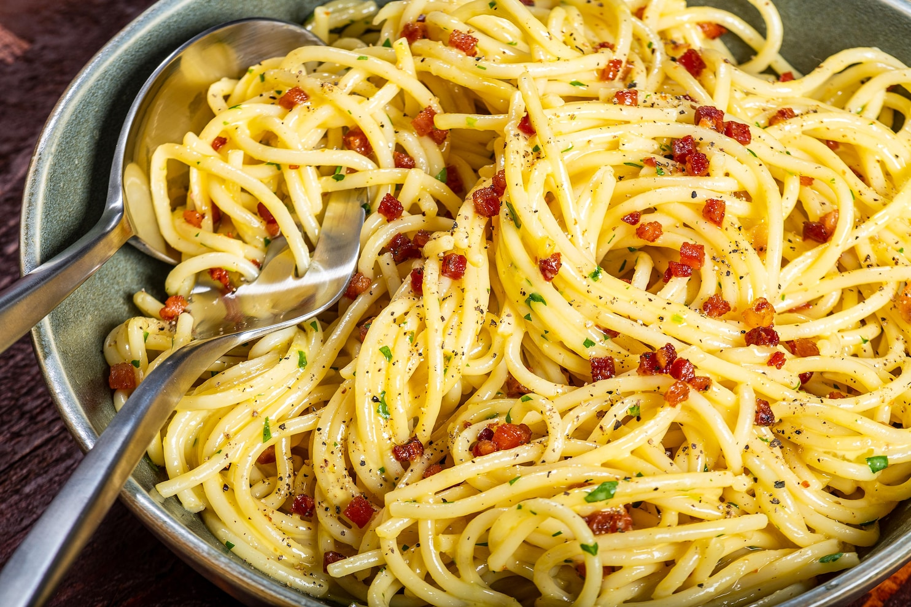

Carbonara

Description:
Spaghetti carbonara is a Roman specialty that consists of pasta coated in a silken sauce of eggs and cheese along with a scattering of crispy meat. It's savory, salty, satisfying and speedy.
Ingredients:
- 1 Large egg
- 1 Large egg yolk
- 2 tablespoons freshly grated Parmigiano-Reggiano
- 2 tablespoons freshly grated Pecorino Romano
- 1 tablespoon finely chopped fresh parsley
- 2 to 4 ounces pancetta (diced)
- 1 tablespoon olive oil
- 1 tablespoon unsalted butter
- 3 tablespoons dry white wine
- 8 ounces dried spaghetti
Steps:
- Fill a large pot with about 3 quarts of water, place over high heat and bring to a boil.
- While the water is coming to a boil, prepare the rest of the ingredients. Using the large, shallow bowl you'll be serving the pasta in, combine the whole egg, egg yolk, Parmigiano-Reggiano, pecorino Romano and parsley, if using. Season with a little salt and a generous amount of black pepper. Using a fork, whisk until thoroughly combined but not so much that you beat a lot of air into the mixture.
- In a 10-inch skillet over medium-high heat, combine the pancetta, olive oil and butter and cook until the pancetta begins to brown but not long enough to make it crisp, 4 to 5 minutes. Add the wine and cook until reduced by half, scraping up any brown bits on the bottom of the pan, 1 to 2 minutes. Remove from the heat.
- Carefully remove about 1 tablespoon of the rendered fat and add it to the egg mixture to begin to temper the sauce, quickly whisking again with the fork.
- When the water comes to a boil, season with 1 tablespoon salt, add the spaghetti and stir until all the strands are submerged. Cook according to the package instructions, stirring occasionally, until the pasta is al dente, or mostly done with just a little bit of bite left.
- When the pasta is almost ready, return the skillet with the pancetta to medium-high heat. When the pasta is done, drain, reserving 1 cup of the water, and transfer it to the serving bowl, tossing vigorously with tongs or stirring with a wooden spoon until thoroughly coated with the egg mixture. Pour half of the pancetta into the bowl, toss again, and add pasta water as needed to achieve your preferred sauce consistency.
- Add the remaining pancetta without stirring so you have plenty visible on top. Serve immediately.